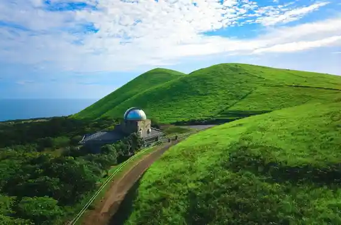
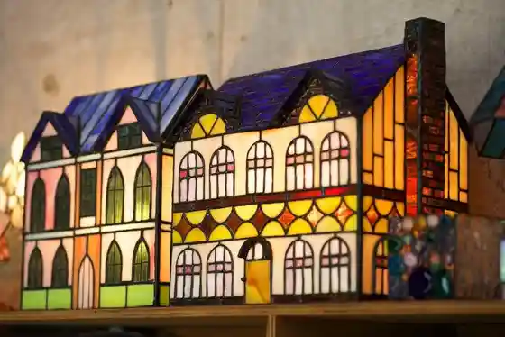
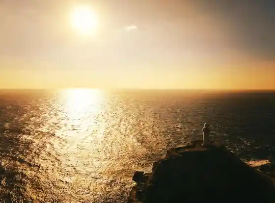
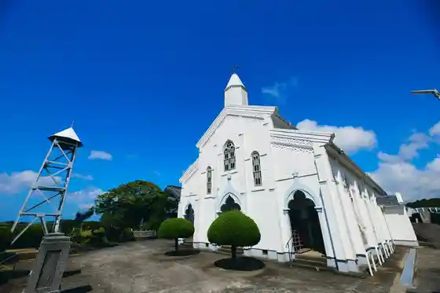

Dozaki Kyokai
Goto, Nagasaki · 0959-73-0705 · Official / source link
Onidake Tenmondai
Goto, Nagasaki · Official / source link

Sutendogurasu Workshop 538
Goto, Nagasaki · 090-1977-8481 · Official / source link

Ose Saki Lighthouse
Goto, Nagasaki · 0959-87-2216 · Official / source link

Mizu no Ura Kyokai
Goto, Nagasaki · Official / source link

Takahama Beach
Goto, Nagasaki · 0959-84-3163 · Official / source link
Buke Yashiki Tori Furusato Kan
Goto, Nagasaki · 0959-72-2083 · Official / source link
Shichi Gaku Shrine
Goto, Nagasaki · 0959-87-2211 · Official / source link
Abumi Se Bijita Center
Goto, Nagasaki · 0959-73-7222 · Official / source link
Kaori Tamako Beach
Goto, Nagasaki · 0959-73-5921 · Official / source link
Tamanora Tsubaki
Goto, Nagasaki · Official / source link
Goto Kanko History Museum
Goto, Nagasaki · 0959-74-2300 · Official / source link
Tsune Tomoshibi Hana
Goto, Nagasaki · 0959-72-6111 · Official / source link
Onidake Kazan Gun
Goto, Nagasaki · 0959-72-6111 · Official / source link
Naru Shima no Egami Shuraku (Egami Tenshudo Toso no Shuhen)
Goto, Nagasaki · Official / source link
Sansan Tomie Kyanpu Village
Goto, Nagasaki · 0959-86-2920 · Official / source link
Abumi Se Yogan Coast
Goto, Nagasaki · 0959-73-7222 · Official / source link
Goto Tsubaki Sono
Goto, Nagasaki · 0959-72-6111 · Official / source link
Inori no Megamizo (Hachikuma)
Goto, Nagasaki · 0959-87-2211 · Official / source link
Shichi Tsu Gaku
Goto, Nagasaki · 0959-82-1111 · Official / source link
Futai Shiki Yojo Furyokuhatsuden (Haenkaze) Hassho no Chi
Goto, Nagasaki · 0959-78-2101 · Official / source link
Onidake Onsen
Goto, Nagasaki · 0959-72-1348 · Official / source link
Saga Shima Senjojiki
Goto, Nagasaki · 0959-84-3111 · Official / source link
Kora Beach
Goto, Nagasaki · 0959-87-2216 · Official / source link
Han Shiki Dam
Goto, Nagasaki · 0959-86-1111 · Official / source link
Goto Kantorii Club
Goto, Nagasaki · 0959-72-4526 · Official / source link
Goto Yaki Masako Kama
Goto, Nagasaki · 0959-73-6697 · Official / source link
Arakawa Onsen Ashiyu
Goto, Nagasaki · 0959-87-2216 · Official / source link
Sakiyama Seaside Park
Goto, Nagasaki · 0959-72-6111 · Official / source link
Onna Gaku (Saga Shima)
Goto, Nagasaki · 0959-84-3111 · Official / source link
Ike Tsuka no Hamajincho
Goto, Nagasaki · Official / source link
Sairen Tera
Goto, Nagasaki · 0959-78-2101 · Official / source link
Kuka Shima Tsubakihara Shi Hayashi
Goto, Nagasaki · 0959-77-2001 · Official / source link
Motokura no Machinami Mi
Goto, Nagasaki · 0959-87-2111 · Official / source link
Ko Shi Bridge
Goto, Nagasaki · Official / source link
Miiraku Kyokai Katorikku Museum
Goto, Nagasaki · 0959-84-2099 · Official / source link
Atorie Iwamura & Happiicherii
Goto, Nagasaki · 0959-64-2246 · Official / source link
Tomie Onsen Center Tasshaka Land
Goto, Nagasaki · 0959-86-3939 · Official / source link
Tamanora Yasohachigatokoro Kannon Do
Goto, Nagasaki · 0959-87-2211 · Official / source link
Shiroishi no Tomozuna Ishi (Nippon Isan)
Goto, Nagasaki · 0959-82-1111 · Official / source link
Ebisu Shrine
Goto, Nagasaki · 0959-78-2101 · Official / source link
Ama Omae Park
Goto, Nagasaki · 0959-84-3111 · Official / source link
Goto Sango Museum
Goto, Nagasaki · 0959-86-0613 · Official / source link
Kentoshi Fune Yori Hakuchi no Hi
Goto, Nagasaki · 0959-82-1111 · Official / source link
Kasamatsu Hiroshi Ari Memorial Museum
Goto, Nagasaki · 0959-64-2209 · Official / source link
Ashi no Ura no Chobo
Goto, Nagasaki · 0959-78-2101 · Official / source link